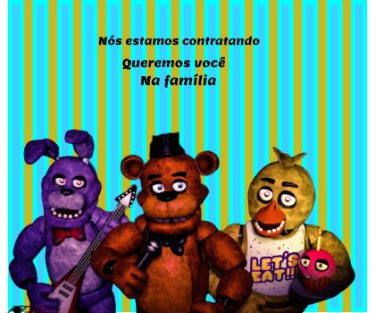
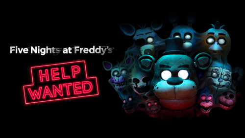

Informamos que está ocorrendo muitos desaparecimentos de criança no estalbelecimento freddy faz bear pizza, recomendamos que deixe suas crianças e suas famílias longe desse local,des da semana passada foi relatado muitos desaparecimentos e relatos de mortes no local, foi informado também que os animatronics do local demonstra odores desagradaveis e que estão muito sujos de "ketchup" assim podemos dizer. O dono do estabelecimento Willian Afton não se pronunciou sobre as provas do feichamento do local, diz ele que "Esse local é o sonho de toda criança, mas não para a policia" Com isso os policiais não chegaram á nenhuma conclusão, mas ainda estão investigando o local.Inumeras vítimas e os policiais deduzem que Willian Afton é o responsável pelas mortes e desapartecimentos pois foi nos contatao que foi visto nas sombras da pizzaria um certo "coelho" Se assim podemos dizer com uma faca na mão cheia de "ketchup". Com tudo isso nós da WWW news queremos avisar e alertar, não frequentem aquele local, não deixe suas crianças sozinhas nas ruas e principalmente no local. Tenham todos um ótimo dia
Informamos que hoje começa as contratações para segurança noturno para a Freddys, pelo que sabemos o pagamento sera de 1500R$ por hora, vc começaria as 12 e tem que sair as 6 da manhã. É uma oportunidade que não pode ser perdida assim de forma aleatória. Então segue o numero da loja:(11)0800326485 bom essa era a noticia boa. A mesma empresa também esta nos informou que contratou inumeras pessoas para fazer uma exeriencia inesqucivel uma em AR e outra em VR.Até onde sabemos a experiencia em VR consiste em pegar todos os mitos que foram relatados na Freddys, tendo des dos reltos de 1975 até 2024, já a experiencia em AR consiste em ser uma "visita" dos animatronicos para sua casa, ai voce como sobreviviente tem que matar os bichos
 Relatamos que nos dias a dias estamos recebendo ligações de pssoas certos eventos estranhos,tipo, uma criança que foi engolida por um robo e sumiu ou até mesmo uma familia de 4 pessoas vão em uma pizzaria mas só 3 sai de la e no mesmo tempo aparece um ursinho de pelucia na porta atrás dessa familia.Nós da WW news orientamos e pedimos para que não compre ou consuma coisas da fazbber pois grande coisas dessas coisas só acontecem lá. Acabamos de ser informados que uma menina virou doce em festa infantil e as mesmas comem esse "doce" em formato de menina cujo o nome era Angel.Acabamos de receber mais uma, uma criança foi...foi...Morta por um projeto de ciencias cujo as peças eram da fazbear...